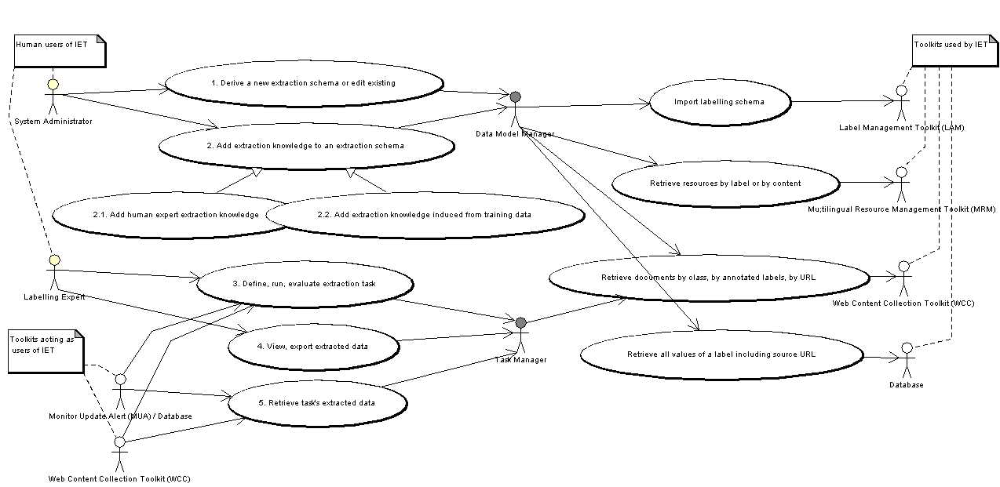
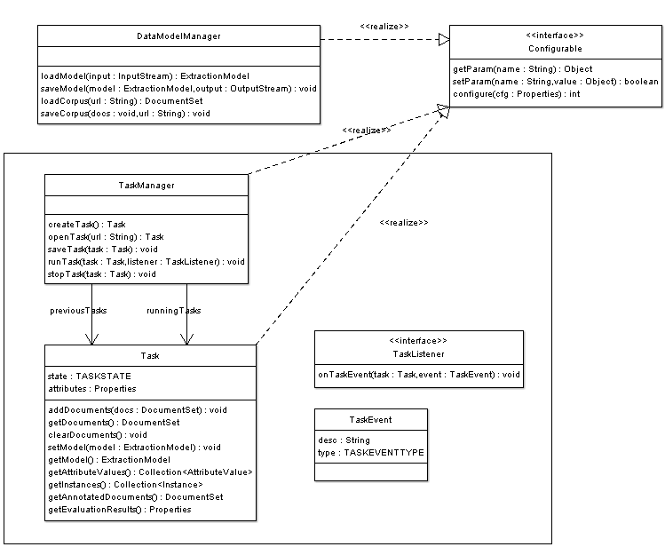
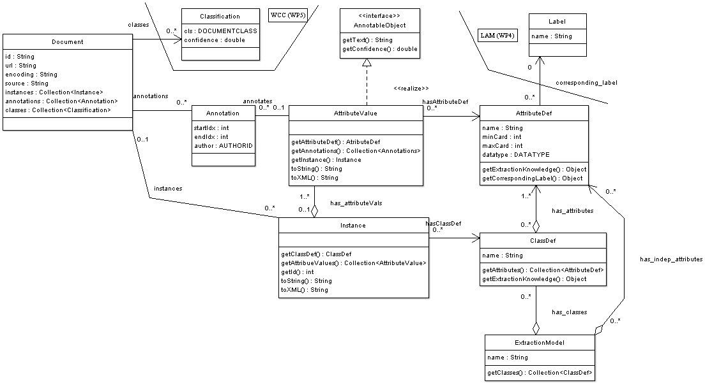
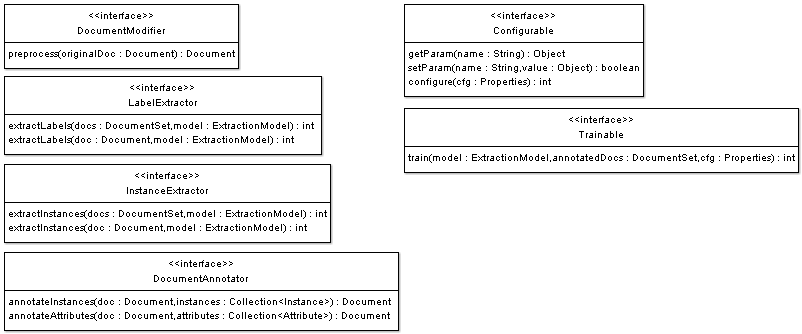
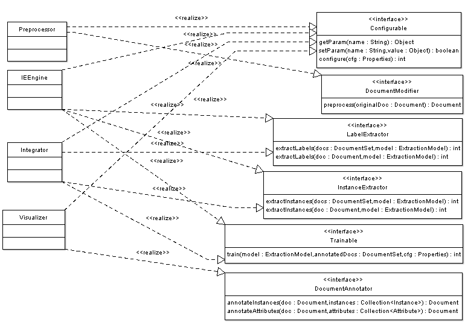

Information Extraction Toolkit - UML model - DRAFT
A. IET use case diagram

B. Class diagram of manager components

C. Class diagram of data containers

D. Interfaces to be implemented by document processing components

E. Document processing components and implemented interfaces
